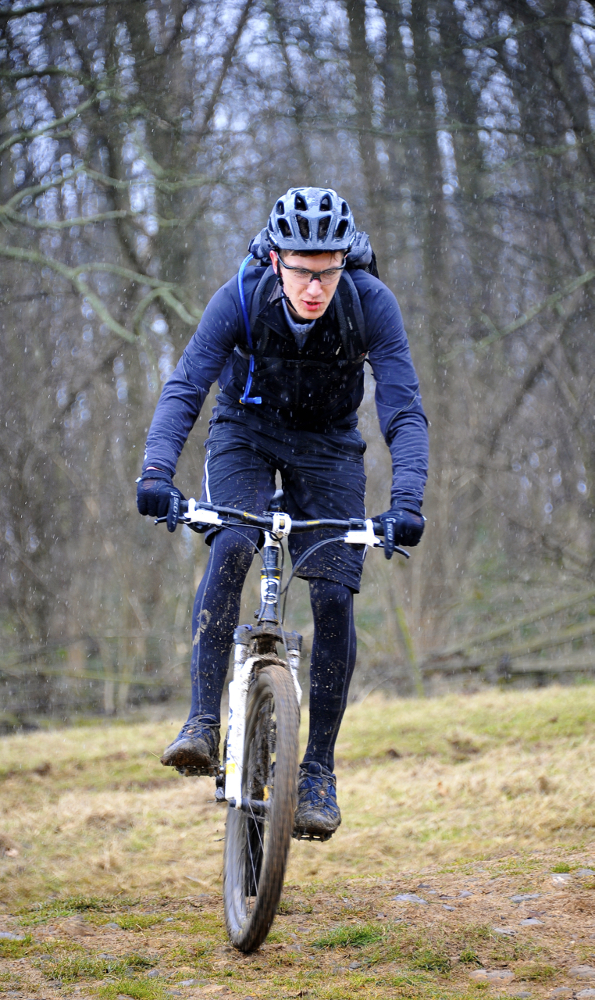

Hi there!
My name is Joe Nyland. I'm a 24 year old developer who lives in Grappenhall, Warrington, UK.
So, by day I work at Formisimo, who are a Manchester based company who provide form analytics services to over 100 countries across the world. I started working at Formisimo in 2014, when there were only a few members on the team and I've been there whilst it grows and flourishes as a company.
On a day to day basis as Formisimo, I'm usually working on frontend development (mainly in PHP) or working on the backend Ruby code which handles our interaction data as it floods in from our client's user's browsers all across the world. I also take on a "DevOps-style" role there: we are a small condensed team and it makes sense to build and optimise the infrastructure around the development team, their requirements for a lightening fast, scalable and reliable infrastructure to run our services on. Coming from a SysAdmin background working of companies like UKFast, this is definitely an area of my current role where I feel right at home, when I'm not coding, of course!
In my spare time, I'm usually at home working away refining my skills to help out further at work, reading up on the newest a greatest in the tech world. When I've had enough of technology for the day, or I'm just fed up with looking at a screen all day, I love taking my dogs for walks around the local countryside, allowing me to get some much needed fresh air and also some space to think.
I'm also a keen cyclist, focusing mainly on mountain biking. I've also done a fair bit of road and track cycling over the years, but nothing beats the feeling of bombing it down the side of a mountain, holding on for dear life! :) I love the sense of satisfaction when you arrive home after a long day of mountain biking in Wales, where you're wet through with rain, your legs are aching from all the pedalling up "for one last go" and you know you've just about managed to come home in one piece. Then, you know you've given the day your all!
Whether I'm at home, at work, on the bike or out for a walk, music is pretty much constantly on in my life. I have a large and eclectic collection and taste in music, ranging from classic Hip-Hop with the Sugar Hill Gang, to classical pieces, chilled out alternative from the likes of Elbow, electronic from Daft Punk and who doesn't like a bit of classic rock from the likes of Led Zeppelin or Black Sabbath?
On my list of things to do before I die, I want to learn how to play the piano, guitar and drums. Well, you've got to aim for something haven't you?
I hope you enjoy the rest of my site, check out my blog (when it's released) and do get in contact if you have any questions or just want to say hi! (I don't bite, unless provoked).